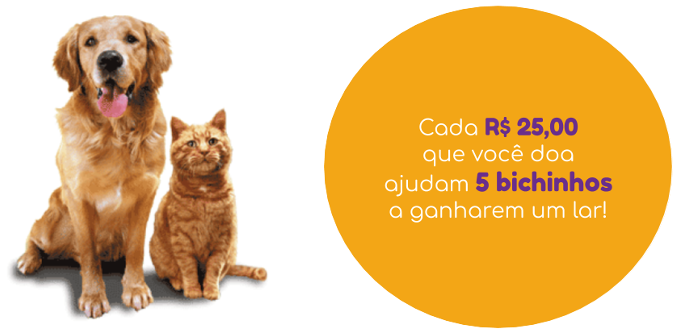

O Amigo Não se Compra é o maior site de adoção de animais do Brasil. Através da nossa plataforma, a gente conecta pessoas que querem ter um pet a cães e gatos resgatados que precisam de um lar. Desde 2012, já conseguimos transformar a vida de mais de 25 mil animaizinhos com a ajuda de voluntários e doações de pessoas que apoiam nossa causa.

Veja as formas de ajudar:
1) Doações via PIX ou transferência
A cada 25 reais, você ajuda 5 doguinhos ou gatinhos. Para doar, você pode fazer uma transferência bancária ou PIX:
PIX: e-mail: contato@adteumamigo.com.br
TED ou depósito em conta:
Banco do Brasil
Agência: 0000-0
Conta-corrente: 00000-x
Associação Adote um Amigo
CNPJ: 00.000.000/0001-00
2) Doações recorrentes
Ao contribuir mensalmente, você ajuda a manter este projeto que já ajudou mais de 20 mil cachorros e gatos a terem uma cama quentinha para dormir. E todo mês você recebe por email um boletim mensal com prestação de contas das nossas atividades.
3) Outras formas de ajudar
Faça a diferença com a gente!